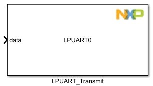
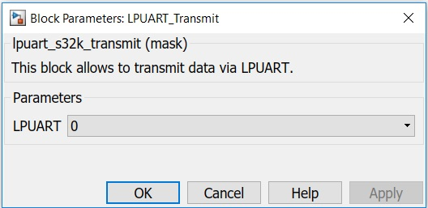

LPUART Transmit Block
The main functionality of the block is transmitting data through a LPUART module.
This block will start a non-blocking transmit over UART. If you want to trigger a subsistem after the end of transmission, see the Tx/Rx ISR block.
Block Image
Inputs:
- None
Outputs:
- Data (uint8)
Parameters and Dialog Box
LPUART Module
Selects which LPUART module to use.
Block Dependency
- Use LPUART_Config Block to configure LPUART
Block Miscellaneous Details:
- None